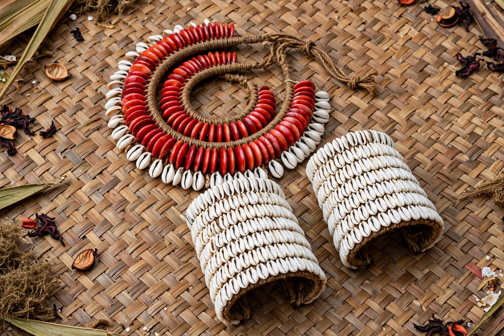

| Kula ring | |
|---|---|
| Region | Massim archipelago, Milne Bay Province, Papua New Guinea |
| Exchanged goods | Mwali (shell armbands); Soulava (shell necklaces) |
| Key study | Malinowski, Argonauts of the Western Pacific (1922) |
The Kula ring is a system of ceremonial exchange practised by the island communities of the Massim archipelago in Milne Bay Province, Papua New Guinea, centred on the Trobriand Islands. Participants make long and dangerous voyages in outrigger canoes between islands in order to exchange two types of shell valuable: red shell-disc necklaces (soulava), which circulate clockwise around the ring of islands, and white shell armbands (mwali), which circulate counter-clockwise. A man who receives a valuable holds it for a period — from hours to years — before passing it on to a partner on the next island; the most famous pieces have names and histories, and temporary possession confers prestige and renown.
The Kula was made famous by Bronisław Malinowski's ethnography Argonauts of the Western Pacific (1922), based on his fieldwork in the Trobriands during the First World War. Malinowski showed that Kula exchange is not trade in the ordinary sense: the valuables are not consumed or used practically, the exchanges are governed by strict custom and magic, and the partnerships — lifelong, hereditary in places — create obligations and alliances across the islands. Alongside the ceremonial Kula, ordinary barter (gimwali) of practical goods takes place. The Kula became a central case in anthropological debates about reciprocity and the gift: Marcel Mauss drew on it in The Gift (1925), and later scholars, notably Annette Weiner, re-examined it with attention to women's wealth and exchange. Thousands of men participate, organised by rank: chiefs may hold dozens of partners and the finest armshells, while commoners handle lesser pieces.